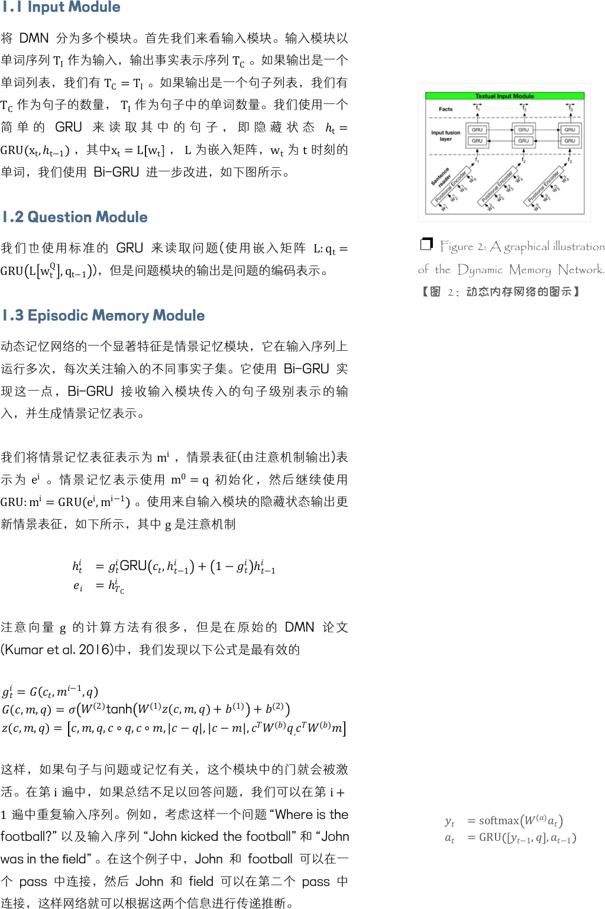
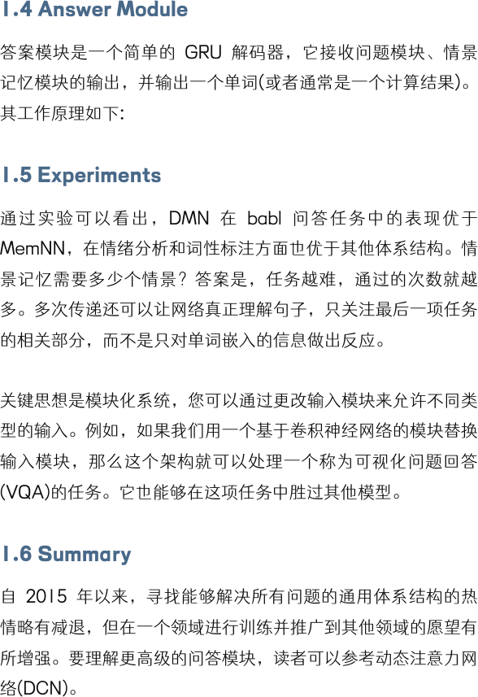
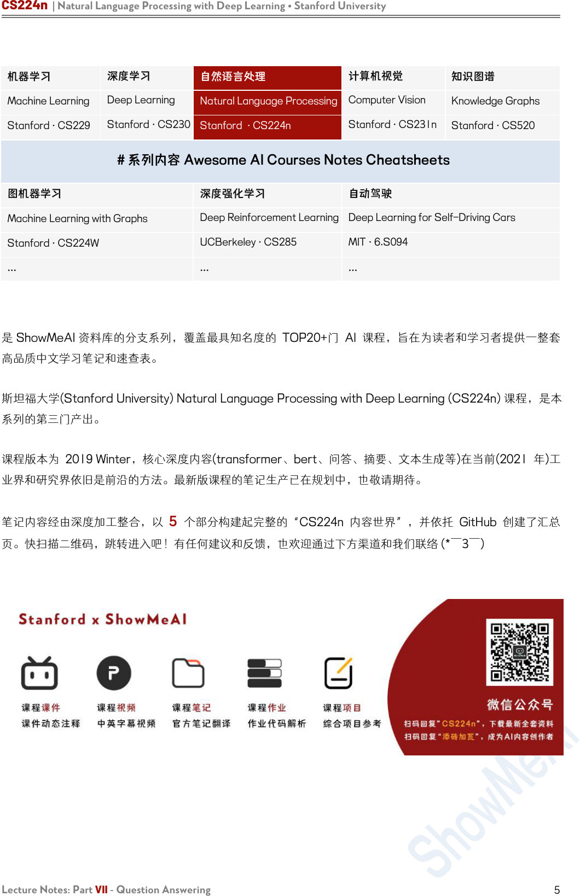

Lecture Notes: Part VII
Question Answering
CS224n 是顶级院校斯坦福出品的深度学习与自然语言处理方
向 专 业 课 程 ， 核 心 内 容 覆 盖 RNN 、 LSTM 、 CNN 、
transformer、bert、问答、摘要、文本生成、语言模型、阅读
理解等前沿内容。
笔记核心词：
question answering, Dynamic Memory Networks, QA, 问答,
对话, 动态记忆网络, MemNN, DCN, VQA
课程全部资料和信息已整理发布，扫描下方任意二维码，均可
获取！！
微信公众号·全套资料
回复 CS224n
底部菜单栏
Bilibili·课程视频
视频简介
置顶评论
GitHub·项目代码
阅读 ReadMe
点击超链接

1. Dynamic Memory Networks for Question
Answering over Text and Images
QA 系统的概念是直接从文档、对话、在线搜索等中提取信息
(有时是段落，或是单词的范围)，以满足用户的信息需求。QA
系统不需要用户通读整个文档，而是倾向于给出一个简短的答
案。现在，QA 系统可以很容易地与其他 NLP 系统(如聊天机
器人)结合起来，有些 QA 系统甚至超越了文本文档的搜索，可
以从一组图片中提取信息。
有 很 多 类 型 的 问 题 ， 其 中 最 简 单 的 是 Factoid Question
Answering 事实类问题回答。它包含的问题看 起来 像““The
symbol for mercuric oxide is?” “Which NFL team
represented the AFC at Super Bowl 50?”。当然还有其他类
型的问题，如数学问题(“2+3=?”)、逻辑问题，这些问题需要广
泛的推理(而且没有背景信息)。然而，我们可以说在人们的日常
生活中，寻求信息的事实类问题回答是最常见的问题。
事实上，大多数 NLP 问题都可以看作是一个问答问题，其范式
很简单：我们发出一个查询，然后机器提供一个响应。通过阅读
文档或一组指令，智能系统应该能够回答各种各样的问题。我们
可以要求句子的 POS 标签，我们可以要求系统用不同的语言
来响应。因此，很自然地，我们想设计一个可以用于一般 QA
的模型。
为了实现这一目标，我们面临两大障碍。许多 NLP 任务使用不
同的架构，如 TreeLSTM (Tai et al., 2015)用于情绪分析，
Memory Network (Weston et al., 2015) 用于回答问题，以及
双向 LSTM-CRF (Huang et al., 2015) 用于词性标注。第二个
问题是全面的多任务学习往往非常困难，迁移学习仍然是当前人
工智能领域(计算机视觉、强化学习等)神经网络架构的主要障
碍。
我们可以使用 NLP 的共享体系结构来解决第一个问题：动态内
存网络(DMN)，这是一种为一般 QA 任务设计的体系结构。
QA 很难，部分原因是阅读一段很长的文字很难。即使对于人
类，我们也不能在你的工作记忆中存储一个很长的文档。
❐ Figure 1: A graphical illustration
of the Dynamic Memory Network.
【图 1：动态内存网络的图示】

1.1 Input Module
将 DMN 分为多个模块。首先我们来看输入模块。输入模块以
单词序列
T
I
作为输入，输出事实表示序列
T
C
。如果输出是一个
单词列表，我们有
T
C
=T
I
。如果输出是一个句子列表，我们有
T
C
作为句子的数量， T
I
作为句子中的单词数量。我们使用一个
简 单 的 GRU 来 读 取 其 中 的 句 子 ， 即 隐 藏 状 态
ℎ
t
=
GRU x
t
,ℎ
t−1
，其中x
t
=L w
t
，
L
为嵌入矩阵，w
t
为 t时刻的
单词，我们使用 Bi-GRU 进一步改进，如下图所示。
1.2 Question Module
我们也 使用标准 的 GRU 来读取问 题 (使用 嵌入矩阵
L:q
t
=
GRU L w
t
Q
,q
t−1
)，但是问题模块的输出是问题的编码表示。
1.3 Episodic Memory Module
动态记忆网络的一个显著特征是情景记忆模块，它在输入序列上
运行多次，每次关注输入的不同事实子集。它使用 Bi-GRU 实
现这一点，Bi-GRU 接收输入模块传入的句子级别表示的输
入，并生成情景记忆表示。
我们将情景记忆表征表示为
m
i
，情景表征(由注意机制输出)表
示为
e
i
。情景记忆表示使用
m
0
=q
初始化，然后继续使用
GRU:
m
i
=GRU
e
i
,m
i−1
。使用来自输入模块的隐藏状态输出更
新情景表征，如下所示，其中
g
是注意机制
ℎ
=
GRU
,ℎ
−1
+ 1−
ℎ
−1
=ℎ
C
注意向量
g
的计算方法有很多， 但 是 在 原 始 的 DMN 论 文
(Kumar et al. 2016)中，我们发现以下公式是最有效的
=
,
−1
,
(,,)=
(2)
tanh
(1)
(,,)+
(1)
+
(2)
(,,)=
,,,∘,∘,|−|,|−|,
()
,
()
这样，如果句子与问题或记忆有关，这个模块中的门就会被激
活。在第 i遍中，如果总结不足以回答问题，我们可以在第 i+
1
遍中重复输入序列。例如，考虑这样一个问题“Where is the
football?”以及输入序列“John kicked the football”和“John
was in the field”。在这个例子中，John 和 football 可以在一
个 pass 中连接，然后 John 和 field 可以在第二个 pass 中
连接，这样网络就可以根据这两个信息进行传递推断。
❐ Figure 2: A graphical illustration
of the Dynamic Memory Network.
【图 2：动态内存网络的图示】
=
softmax
()
=GRU
−1
,
,
−1

1.4 Answer Module
答案模块是一个简单的 GRU 解码器，它接收问题模块、情景
记忆模块的输出，并输出一个单词(或者通常是一个计算结果)。
其工作原理如下:
1.5 Experiments
通过实 验可以 看出， DMN 在 babl 问答任务中的 表现优于
MemNN，在情绪分析和词性标注方面也优于其他体系结构。情
景记忆需要多少个情景？答案是，任务越难，通过的次数就越
多。多次传递还可以让网络真正理解句子，只关注最后一项任务
的相关部分，而不是只对单词嵌入的信息做出反应。
关键思想是模块化系统，您可以通过更改输入模块来允许不同类
型的输入。例如，如果我们用一个基于卷积神经网络的模块替换
输入模块，那么这个架构就可以处理一个称为可视化问题回答
(VQA)的任务。它也能够在这项任务中胜过其他模型。
1.6 Summary
自 2015 年以来，寻找能够解决所有问题的通用体系结构的热
情略有减退，但在一个领域进行训练并推广到其他领域的愿望有
所增强。要理解更高级的问答模块，读者可以参考动态注意力网
络(DCN)。

CS224n | Natural Language Processing with Deep Learning • Stanford University
Lecture Notes: Part VII - Question Answering
5
机器学习
深度学习
自然语言处理
计算机视觉
知识图谱
Machine Learning
Deep Learning
Natural Language Processing
Computer Vision
Knowledge Graphs
Stanford · CS229
Stanford · CS230
Stanford · CS224n
Stanford · CS231n
Stanford · CS520
# 系列内容 Awesome AI Courses Notes Cheatsheets
图机器学习
深度强化学习
自动驾驶
Machine Learning with Graphs
Deep Reinforcement Learning
Deep Learning for Self-Driving Cars
Stanford · CS224W
UCBerkeley · CS285
MIT · 6.S094
...
...
...
是 ShowMeAI 资料库的分支系列，覆盖最具知名度的 TOP20+门 AI 课程，旨在为读者和学习者提供一整套
高品质中文学习笔记和速查表。
斯坦福大学(Stanford University) Natural Language Processing with Deep Learning (CS224n) 课程，是本
系列的第三门产出。
课程版本为 2019 Winter，核心深度内容(transformer、bert、问答、摘要、文本生成等)在当前(2021 年)工
业界和研究界依旧是前沿的方法。最新版课程的笔记生产已在规划中，也敬请期待。
笔记内容经由深度加工整合，以 5 个部分构建起完整的“CS224n 内容世界”，并依托 GitHub 创建了汇总
页。快扫描二维码，跳转进入吧！有任何建议和反馈，也欢迎通过下方渠道和我们联络 (*￣3￣)